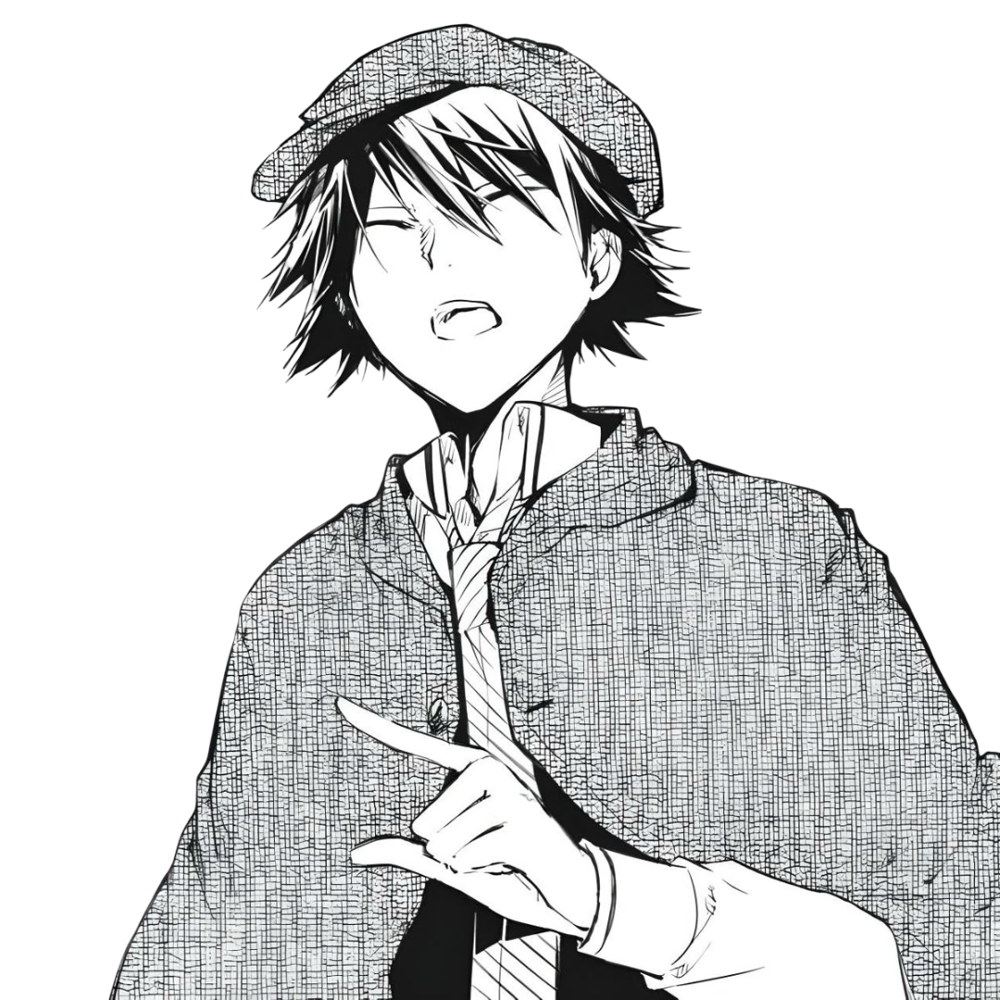

Armed Detective Agency
A high-stakes mystery investigation visual novel. Analyze case files, question witnesses, and test your English skills under pressure.
⚙ Adaptive difficulty powered by a real K-Nearest Neighbors classifier (ml.js), trained on response-time and accuracy patterns.
DETECTIVE
Initializing story sequence...
CLICK OR PRESS SPACE ▶
DECISION POINT
CHAPTER I
THE GUILD
ARMED DETECTIVE AGENCY
CASE #001 — REVIEW
INVESTIGATION REPORT
CASE REVIEW
All linguistic evidence has been recorded and reviewed.
MEURSAULT ESCAPE:
0/5
FINAL VERIFICATION: —
FINAL VERIFICATION: —
ARMED DETECTIVE AGENCY
CASE #001 — CLOSED
FINAL EVALUATION
CASE CLOSED
S
Evaluation complete.
FINAL SCORE: 0
Final adaptive difficulty: MEDIUM
— Ranpo Edogawa, Greatest Detective